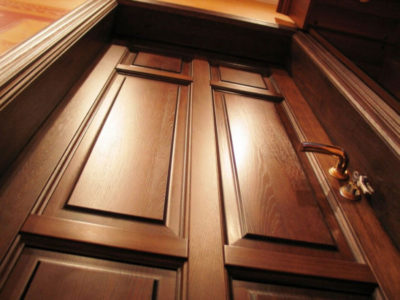
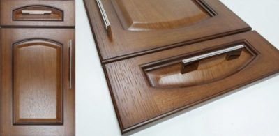

Всим привіт
Мене звати Сергій, мені 21 рік, і я вже 6 років працюю малярем на меблевому виробництві. За цей час я отримав деякі навички та поділюся ними з Вами.
А саме поговоримо про покраску шпонових дверей
Фарба по шпону. Чим і як пофарбувати шпоновані двері.
Шпоном називають деревний матеріал, який являє собою найтонші деревні пластинки або листи. Залежно від технології виготовлення шпон буває наступних видів:
- Пиляний
- Струганий
- Лущений
У аркушів (пластин) шпону є лицьова (права) і зворотна (ліва) сторона. Поверхні сторін відрізняються своєю щільністю. Поверхня лицьового боку більш щільна, ніж у зворотному, структура якої пухка і має мікротріщини.
Шпон широко використовується в меблевій промисловості. Цей матеріал також використовується в декоративних цілях.
Листи шпону, наклеєні на меблеві фасади або листи фанери, з якої виготовляють різні деталі меблів, мають один недолік. Цей недолік полягає в недостатній вологостійкості. Існує вологостійка фанера, але і їй бажано забезпечувати додатковий захист. Цю особливість матеріалу необхідно враховувати при використанні шпону і при ремонті меблів, виготовленої з його застосуванням. У разі ремонту меблів на перший план виходить питання фарбування шпону
Технологія фарбування
Фарбування шпону своїми руками — операція відносно не складна і не сильно відрізняється, за технологією і по послідовності дій. Але, тим не менш, цей процес має певну специфіку.
Алгоритм фарбування досить традиційний і включає в себе наступні етапи:
- Підготовку поверхні;
- Підбір типу і кольору фарби;
- Нанесення покриття;
- Захист покриття.
Чим краще пофарбувати шпоновані двері?
Нерідко буває так, що при купівлі вторинного житла міжкімнатні або вхідні двері в квартирі залишають бажати кращого. Наприклад, може абсолютно не підходити колір до загального інтер’єру при збереженні конструкції в цілому. А тому виникає бажання поміняти двері. Але навіщо міняти, коли вони ще добротні, в прийнятному стані і можуть використовуватися ще не одне десятиліття? Рішення існує: потрібно просто пофарбувати двері.
Схема шпонованих дверей з лаковим покриттям.
Неприємностей не з’явиться, якщо врахувати матеріал, що становить основу конструкції, і ступінь зношеності поверхонь.
Залишу посилання на навчальне відео
Навчальне відео